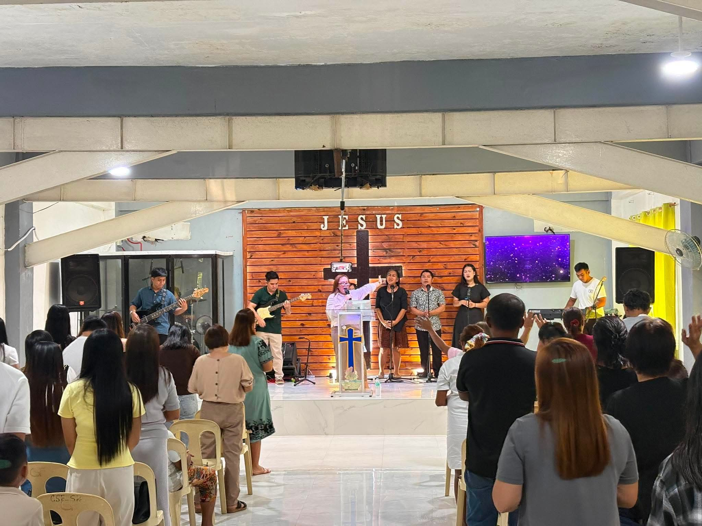
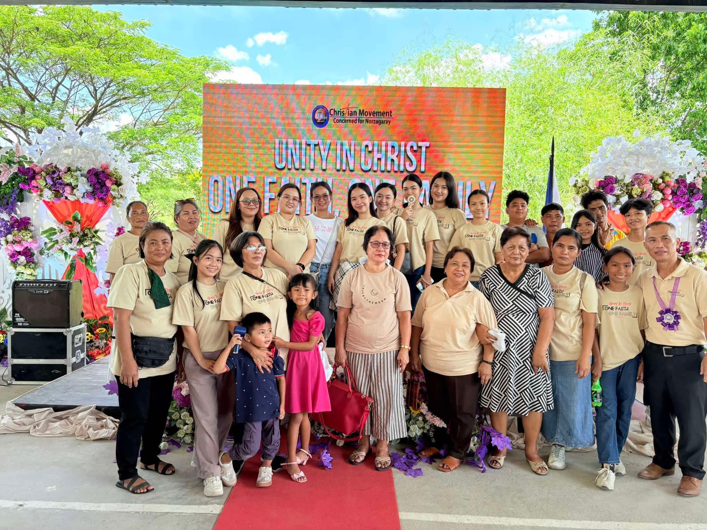
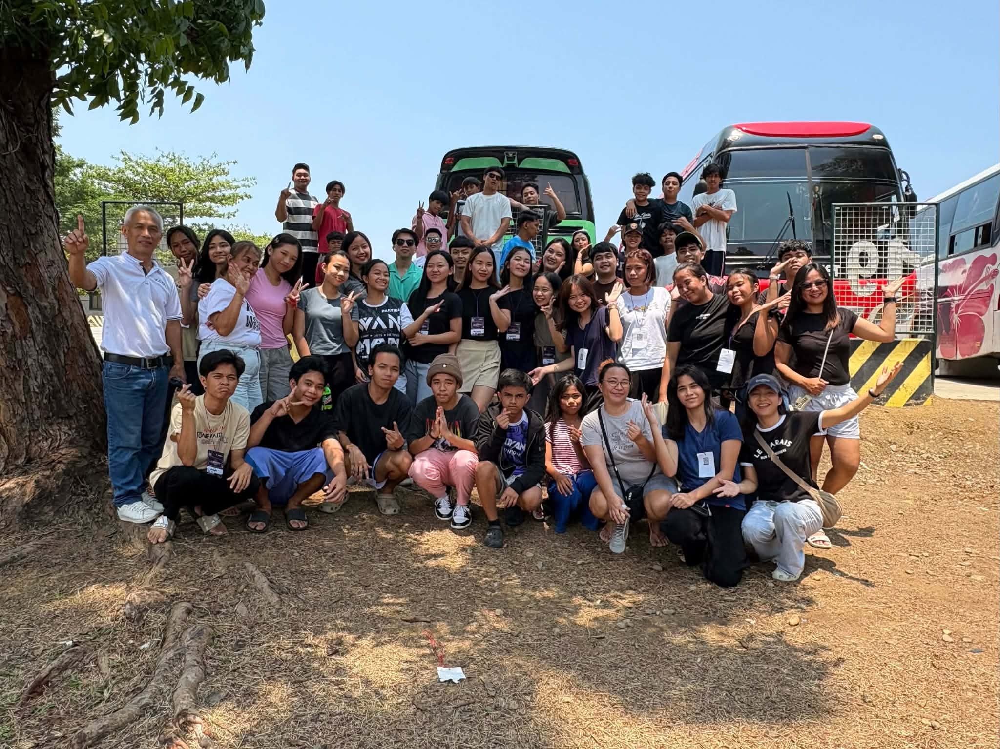
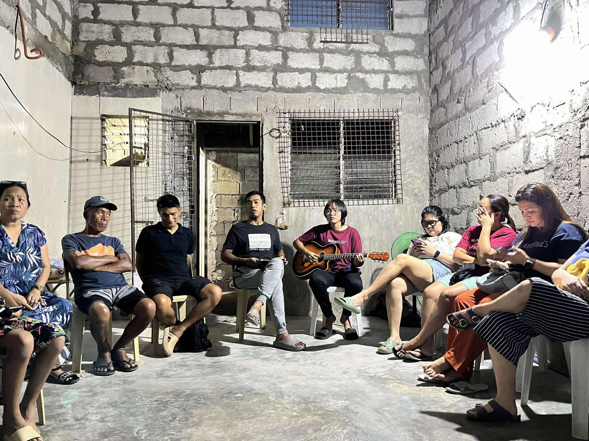
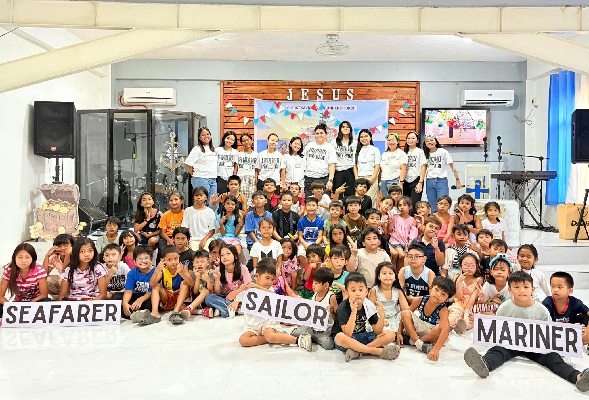
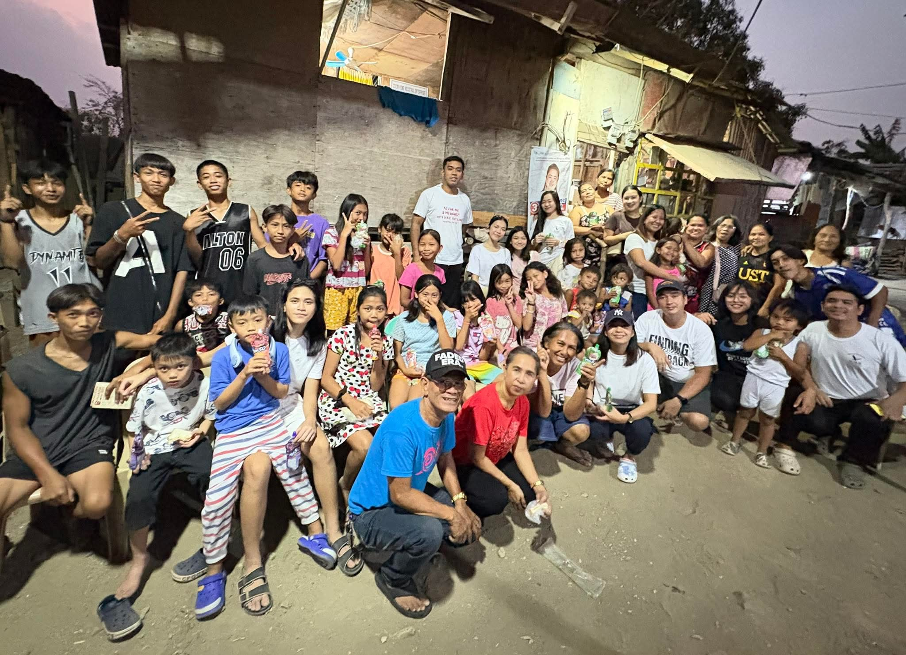

Two Decades of God’s Faithfulness: Pressing Forward Toward the Promise Ahead
"I press toward the mark for the prize of the high calling of God in Christ Jesus." — Philippians 3:14
Days
Hours
Minutes
Seconds
📍 CSF Church Sapang Kawayan • November 8, 2026 • 9:00 AM
Celebrating Two Decades of Unfailing Grace & Everlasting Praise
Date: November 8, 2026
Time: 9:00 AM – 12:00 PM
Venue: CSF Church Sapang Kawayan
— Philippians 1:3 —
Click any photo below or view our complete 20-year journey collection.






Special Guest Speaker
We are honored to have Ptra. Miles Barleta as our Guest Speaker for our 20th Anniversary celebration! Join us as she shares an inspiring message of faith, grace, and God's unwavering promises for our church family.
Address: CSF Church Sapang Kawayan
Phone: +63 965 039 0952
Email: churchcsf@gmail.com
Facebook: Christ Savior Forerunner Church